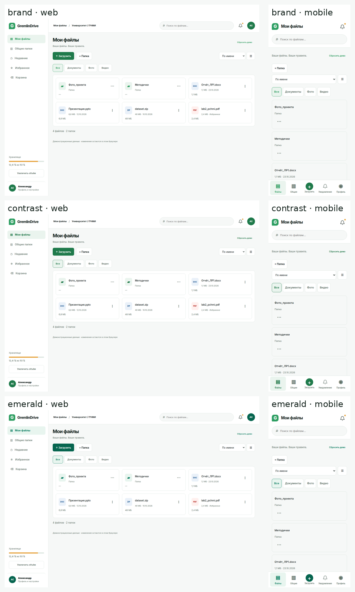
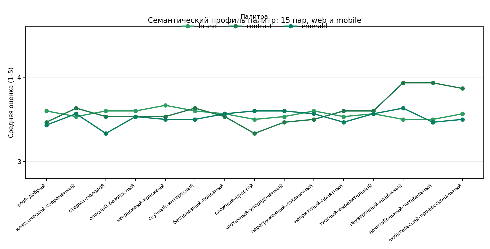
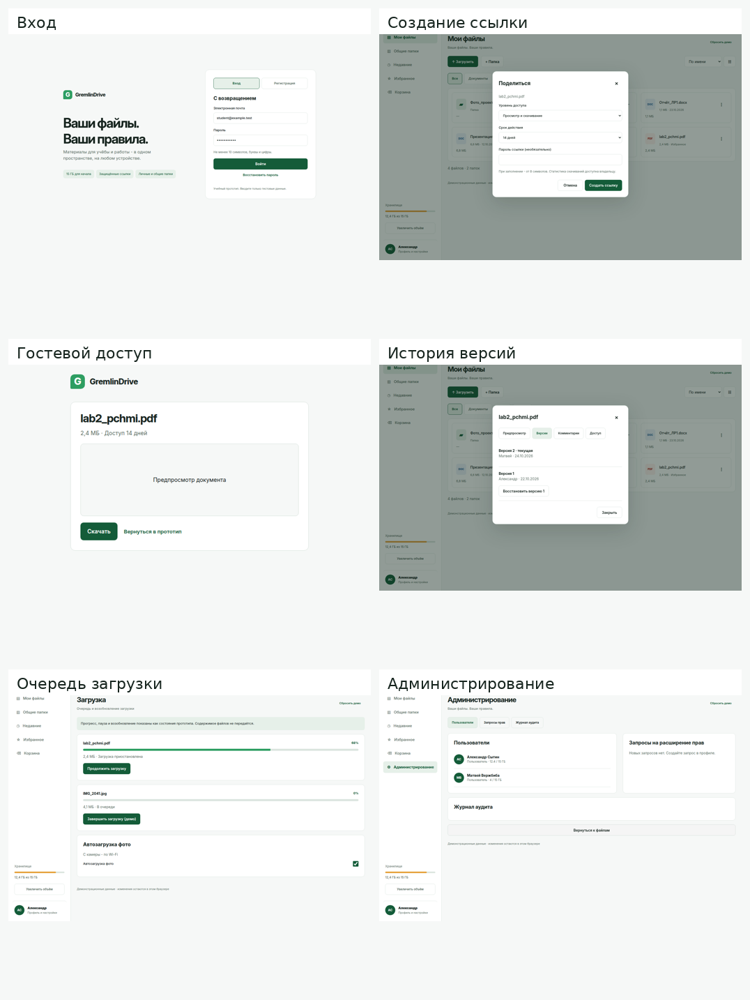
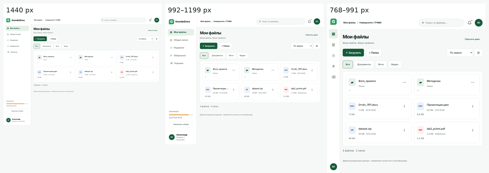
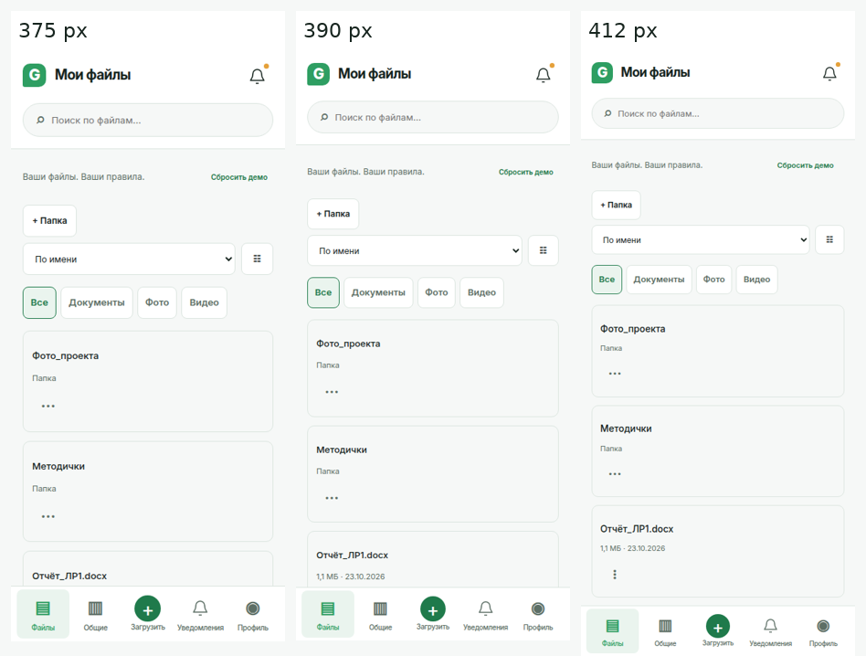
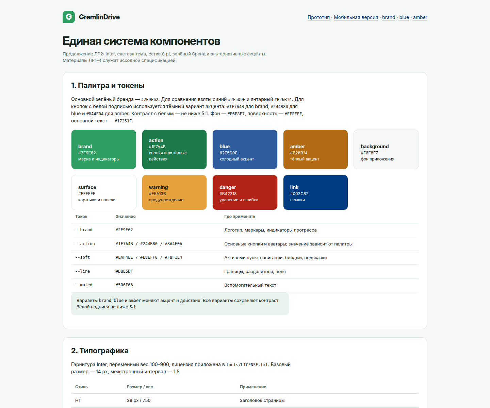

Лабораторная работа 5 · ФПМИ БГУ
Прототип и визуальный язык
GremlinDrive · веб- и мобильный интерфейсы. Продолжение дизайна ЛР2: Inter, зелёная палитра, пять разделов web и пять вкладок mobile.
Визуальный язык
Сравниваются три акцента внутри зелёной гаммы при одинаковой композиции. Пары 1–7 взяты из методических указаний, пары 8–15 дополняют профиль. Положительный полюс справа, оценка 1–5.


| Платформа | brand | contrast | emerald |
|---|---|---|---|
| Web | 3,636 | 3,680 | 3,578 |
| Mobile | 3,493 | 3,533 | 3,467 |
Выбрана contrast: наибольшее среднее на обеих платформах и лучшие оценки читабельности, надёжности и профессионализма. brand сохранён для марки, emerald — как альтернатива. Различия небольшие; вывод описательный.
Интерактивный прототип
Вход, файлы и папки, поиск, ссылки, гостевой доступ, версии, участники, загрузка, квота, аудит и офлайн-состояние. Тестовый вход: student@example.test / gremlin2026; гостевая ссылка — пароль laboratory123.

Адаптивность
Шесть раскладок web и пять устройств mobile/tablet. Проверено в Chromium: горизонтального переполнения нет, видимые кнопки не меньше 44×44 px.


Руководство по стилю
Токены, типографика, сетка, компоненты, состояния и доступность. Минимальная область действия — 44×44 px; основная кнопка использует #1F7A4B и белую подпись.

Проверка
| Проверка | Результат |
|---|---|
| Web: 6 ширин | Переполнения нет, кнопки ≥44×44 px |
| Mobile/tablet: 5 устройств | Переполнения нет, нижняя навигация и safe-area |
| Вход и гостевая ссылка | Работают с тестовыми данными |
| Поиск из корня | Находит файл во вложенной папке |
| «Недавние» | 5 файлов, сортировка по дате изменения |
| Корзина | Загрузка и создание папки скрыты |
| Администрирование | Пользователи, запросы, аудит |
| Контраст | #1F7A4B на белом — 5,32:1 |